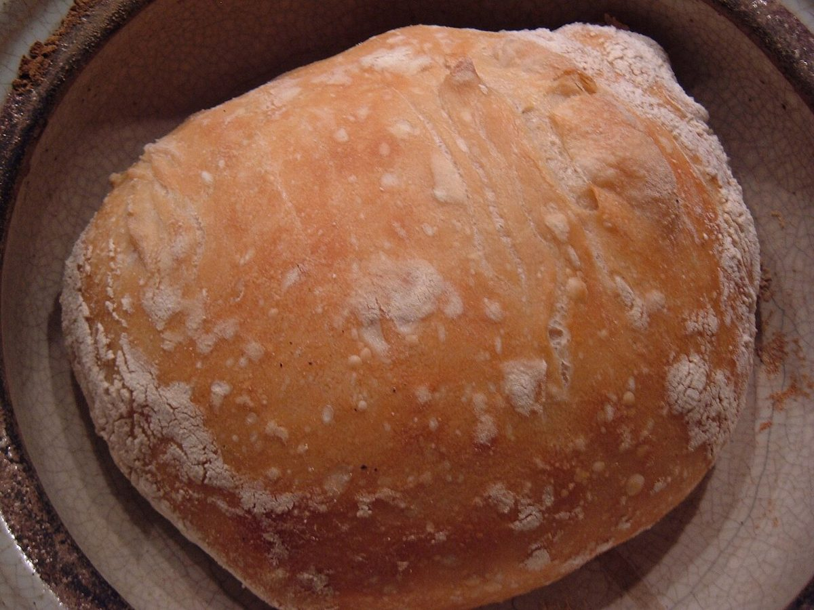
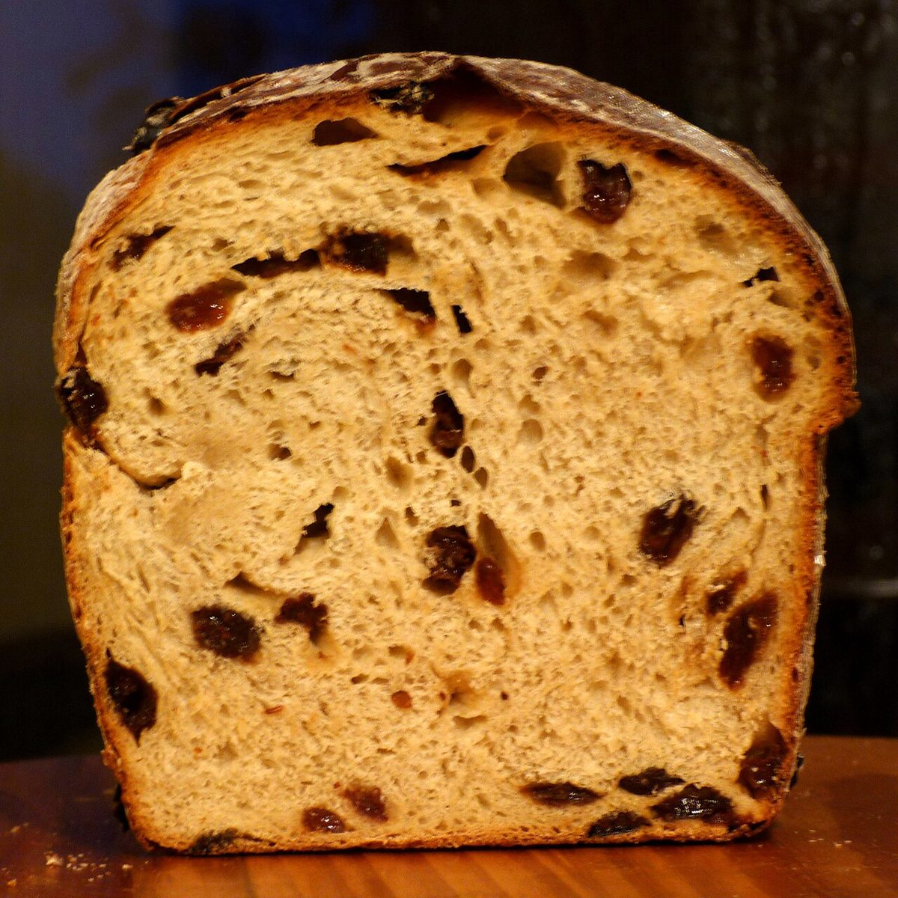
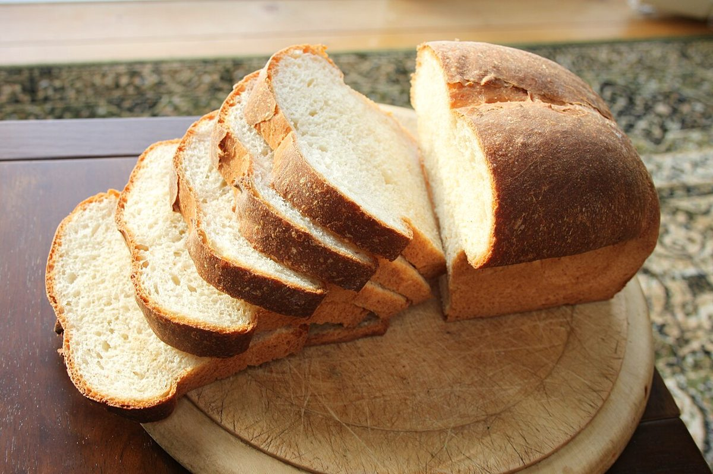

ABOUT
お店の由来と想い
Puissance(ピュイサンス)は、2022年1月20日に静岡県富士市五貫島でオープンしたパン屋です。店主は神奈川県葉山の名店で13年修行したのち、家族とともに富士市へ移り、この店を開きました。
- 店名の「Puissance」は、お店の説明ではフランス語で「力」の意味とされています。
- ロゴの象は、店主の奥さまが描いたもの。象が好きなお子さんの影響があり、象の力強さが店名とつながっているそうです。
- 生地は市販のものに頼らず、素材にこだわって手づくり。シンプルな味わいで、いろいろな料理に合わせやすいパンです。
上記は開店時の紹介記事などで確認できた内容です。営業時間・定休日はInstagramでご確認ください(このページでは準備中としています)。

BREAD
どんなパンがあるの?
開店時の紹介では、バゲット、ベーコンエピ、レーズンパン、クロワッサン、あんぱん、クリームパン、食パンなどが並んでいました。ハード系のパンが得意なお店のようです。数に限りがあり、早く売り切れることもあるとのこと。下の写真はすべてイメージ(フリー素材)で、実際の商品ではありません。
バゲット
外はパリッと、中はもっちり。シンプルな生地を味わう定番。
写真: 「Baguettes - stonesoup」 jules / stonesoup / CC BY 2.0(Wikimedia Commons)

レーズンのパン
自家製の天然酵母で仕込むレーズンパンがあるとのこと。
写真: 「Raisin bread crumb shot (6274216810)」 Jim Champion / CC BY-SA 2.0(Wikimedia Commons)
食パン
象のスタンプが目印の食パンがあるとのこと。
写真: 「Tin Loaf - one slash in the crust」 Mike Finn / CC BY 2.0(Wikimedia Commons)営業時間・価格・詳しいメニュー: 準備中(Instagramをご覧ください)
TEXTURE
焼き色と、気泡と、層
生地から手づくりするパンは、割ると表情が見えてきます。下はイメージ写真です。


VOICE
口コミ(イメージ例)
以下は制作側が想定して書いた創作の例で、実在のお客様の声ではありません。
イメージ例
バゲットの皮がパリッとしていて、シンプルなのに食べ飽きない味でした。
イメージ例
象のマークがかわいくて、小さな店内でゆっくり選ぶのが楽しいです。
イメージ例
午前のうちに行くとパンの種類が多いので、早めの来店がおすすめです。
ACCESS
アクセス
- 住所: 〒416-0946 静岡県富士市五貫島90-8
- 電話: 準備中
- 営業時間・定休日: 準備中(Instagramをご確認ください)
- Instagram: @puissance20211204
PHOTO CREDITS
写真について
このページの写真はフリー素材(Wikimedia Commons)のイメージ写真です。Puissanceの実際の商品や店舗の様子ではありません。
- croissant-whole.jpg: 「Croissant, whole」 SKopp / CC BY-SA 3.0
- croissant-section.jpg: 「Croissant, cross section」 SKopp / CC BY-SA 3.0
- croissant-iso.jpg: 「Croissant Isolated On White Background」 personalgraphic.official / CC0 1.0
- roll-hole.jpg: 「Bread roll with crumb hole」 SKopp / CC BY-SA 3.0
- roll-poppy.jpg: 「Bread roll with crumb hole, frontal view」 SKopp / CC BY-SA 3.0
- kaiser.jpg: 「Kaisersemmel-」 Kobako / CC BY-SA 2.5
- crumb-black.jpg: 「Sourdoughbreadcrumb」 Nleamy / CC BY 2.5
- baguettes.jpg: 「Baguettes - stonesoup」 jules / stonesoup / CC BY 2.0
- sliced-tin-loaf.jpg: 「Tin Loaf - one slash in the crust」 Mike Finn / CC BY 2.0
- raisin-loaf.jpg: 「Raisin bread crumb shot (6274216810)」 Jim Champion / CC BY-SA 2.0
- round-loaf.jpg: 「No-Knead Bread - Finished Loaf (294068096)」 daisybush / CC BY 2.0
- melonpan-pair.jpg: 「Melon-pan 001」 Ocdp / CC0 1.0
- anpan-cut.jpg: 「Anpan 001」 Ocdp / CC0 1.0